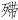

因此，我们虽不作翻案文章，却打算还一个真实的阮大铖。所谓真实，不是说以往主流叙事和评价呈现的阮大铖有假，而是指它们以扁平化、面具化，遮蔽掉他奸臣以外的许多东西，致迄今广为人知的阮大铖，并不完整，有不少缺失。
不过，复原完整的阮大铖，又谈何容易。奸臣下场，不光令其面目扁平，也让相关材料流失惨重。以剧作论，全部十一种今仅存世四种；诗歌方面，“清代藏书家于其诗率少著录”，《明史》“削其诗不登《艺文志》”，“朱彝尊《明诗综》不载大铖姓字，附论于李忠毅诗前，曰：‘佥壬反复，真同鬼蜮，虽有《咏怀堂诗》，吾不屑录之。’”[69]“终满清二百八十年之际，除《燕子笺》《春灯谜》两传奇外，殆无人能举《咏怀堂诗》之名者矣。”[70]即便如此，现有材料所能补充于我们的认识，也将大大有异于只是一介小丑的阮大铖。
把目光移出政治，我们将面对一个全才人物，以致可以说他凡所涉足，不处顶尖、即为大家。
先从一本书说起。目前所知“我国第一部系统全面论述造园艺术的专书”[71]、日本人尊为“世界最古之造园书籍”[72]的计成（表字无否）《园冶》，便是阮氏出品。据阚铎《园冶识语》对日本内阁文库所藏明刻本的描述：
睹末页之印记，一圆形楷书“安庆阮衙藏板，如有翻刻千里必治”十四字，一方形篆书“扈冶堂图书记”六字，知为安庆阮氏所刻。[73]
由此来看，阮氏出品似成规模和品牌，常遭盗版。而《园冶》这样的书由他出版，又同时说明很多问题。比如对园林艺术的造诣、见识和感情。这种书，不同于冯梦龙所刻印的小说、传记，也不是复社学阀垄断下的科举选文，那些书，都可大量印行，很有赚头，《园冶》却是冷门的专业书籍。古时印书，一页一雕，赀用甚高。阮大铖出此书，明摆着无钱可挣，又非因巴结讨好（作者计成完全是个穷艺术家），而只出于对造园的懂与爱。说到“懂”，阮大铖于造园不止于鉴赏，也是实践家。其为《园冶》所写叙中，谈到曾亲试造园：“予因剪蓬蒿瓯脱，资营拳勺，读书鼓琴其中。”[74]若非如此，造园高手计成也不会引他为知己。《咏怀堂诗集》《咏怀堂诗外集》中，以园为题的篇什甚多。举一例，《改筑集园诗六章》，其六：
高情无刺促，小阁领清芬。月涌千灯墖，霞敷千赍文。坞深花失曙，林迥叶留曛。不识羊求侣（王莽时“归隐”典故），谁来就白云。[75]
隐者格调以外，对园艺细微之妙的把握，更可体会，如“坞深花失曙，林迥叶留曛”一句。他曾专门为计成写过一首诗，刻画这位造园家的同时，表达自己对园林艺术的颖悟：
无否东南秀，其人即幽石。一起江山寤（寤即梦），独创烟霞格。缩地自瀛壶（瀛洲），移情就寒碧。精卫服麾呼，祖龙（嬴政因是“始皇”，后世称之祖龙）逊鞭策。有时理清咏，秋兰吐芳泽。静意莹心神，逸响越畴昔。露坐虫声间，与君共闲夕。弄琴复冲觞，悠然林月白。[76]
赞叹计成作为天才园艺家，如其造设一样，自己也是挺秀东南的幽石。形容高超的园艺，能唤醒江山于梦中，将从来只是幻想的瀛洲化为现实，浓缩于方寸之地，而鬼斧神工，连填海之精卫、求仙之帝王也愿供驱策。
上世纪九十年代末，我在计成故乡江苏同里镇，意外见到《园冶》而购之。也就是读了此书，而隐约意识到对阮大铖有进一步探究的余地。
之前，除了奸臣身份，只知道他还是个戏剧家。但所谓知道，也很空洞。说起来，大学期间我还特别在意古典戏曲，毕业论文写的就是汤（显祖）沈（璟）之争，然而当时所读戏曲史著作，都没有给阮大铖什么具体的评价。他的戏剧家身份所以未被埋没，其实主要也是这可以作为他笼络弘光皇帝使其堕落的误国证据，孔尚任《桃花扇》就是这样处理的。
戏剧，确被他用为上述工具，但他于戏剧的意义却远不止此。我们可简简单单而绝无虚浮地说：他是中国戏剧史上的巨子，他对这领域的贡献，可以排到前五名。
曾有精研京剧之先生某，专门与我探讨阮大铖作为京剧渊源的可能。据他研究，以往将京剧前身“徽班”认作徽州徽剧是错误的，所谓“徽班”其实是安庆府一带的戏班。他在安庆民间访到一些民谣，描述了该地梨园以阮大铖为祖、戏剧如何因阮大铖而兴起。京剧源自安庆、安庆戏剧兴于阮氏，这线索令他推想，阮大铖或为京剧之祖。他向我求证阮氏在怀宁从事戏剧的具体情形，可惜我所知有限，抑或资料本身就有限，未能给以确切的回答。
目前所知的是，阮大铖确系逐退之
后，居乡期间开始了戏剧活动。例如其名作《春灯谜》自序云：“兹编也，山樵所以娱亲而戏为之也。”[77]意思是，为娱乐亲友写了这部戏，而所署日期“崇祯癸酉三月望日”即1633年4月22日，时在崇祯六年，而他避居南京为翌年，故可肯定其戏剧活动始于怀宁而非南京。当时有人说：“金陵歌舞诸部甲天下，而怀宁歌者为冠，所歌词皆出其主人。”[78]所指即阮大铖，似乎阮氏在南京的私人剧团，就是从怀宁带过去的，唯不知此怀宁家班所习弋阳腔还是昆腔。我们暂无他从事戏剧早于逐退（崇祯元年）的资料，但自年龄言，彼时他已四十一岁，不可能于此时方接触戏剧且顿成大器，而必有一积累潜习过程，从前文所述阮自华凌霄台“梨园数部，观者如堵”盛况看，阮大铖之于戏剧应有家学渊源，实际修研或早至少年亦未可知。
但他戏剧才华井喷，的确是在官场失意闲居乡里之时。他的剧作，有两点他人无可比拟之处。一是真正原创，情节人物不借自改编，尽出自己虚构：“其事臆也，于稗官野说无取焉。”[79]古人写戏，多从旧史传说取材，很少自创，而阮大铖缘何不肯如此？以下的话，显示了个性：“盖稗野亦臆也，则吾宁吾臆之愈。”[80]不屑拾人牙慧，这既是骄傲，也是更好的创作意识。二是他大破文人剧作的格局，真正将剧本与戏曲自身规律熔于一炉，不但在文学层面上求善美，更在戏剧表演层面求当行，别人作品往往可读不可演，他的作品则首先便于演、利于演，在舞台上大放硕采：
余词不敢较玉茗，而差胜之二：玉茗不能度曲，予薄能之。虽按拍不甚匀合，然凡棘喉齿之音，早于填时推敲小当，故易歌演也……即歌板外一种频（颦）笑欢愁，载于衣褶眉稜者，亦如虎头（顾恺之乳名）、道子，丝丝描出，胜右丞自舞《郁轮》（王维曾作曲《郁轮袍》，此处似指其同时亦为歌舞）远矣，又一快也。[81]
玉茗，指汤显祖。阮大铖很尊敬汤显祖，却明白无误地表示，自己比他略胜一筹：彼“不能度曲”，己“薄能之”而“易歌演”。其实他足够谦虚了，考虑到戏曲艺术特性，从整体戏剧观而非单一文学角度看，阮大铖是比汤显祖更先进的。汤显祖仅为骚人墨客，阮大铖则以诗人兼音乐家，打一比方，汤显祖只写了歌剧脚本，阮大铖却在写脚本同时连曲子也谱好。除音律的考究、切合，阮大铖写戏又极注意人物刻画上文学与表演两种因素的结合，在剧本中已充分预留表演空间，此即他所说“歌板外一种频笑欢愁，载于衣褶眉稜者”。对此，他不掩得意，觉得自己剧作之善摹人物，堪比顾恺之、吴道子，乃至苏轼赞为“诗中有画，画中有诗”的王维，竟不在其话下。
他是否过于狂妄呢？一点也不。从前引时人“金陵歌舞诸部甲天下，而怀宁歌者为冠”的评论，可知他的独步天下，乃世所公认，连政治上的敌人也不持异议。更堪奇者，他还不单是作家、音乐家，乃至是表演艺术家，能亲自登场演戏——黄宗羲好友沈士柱以骂他为目的而写《阮大铖祭文》说：“弘光半载，公塗面登场，自为玩弄。”[82]意在丑之，却让我们对其才能又多知一种。所以，他能自任剧团导演、艺术总监，阮家私班是他一手调教，每戏亲为演员讲解。大家可读《桃花扇》中有关段落，尤其是曾亲睹阮家班演出的张岱的描述：
阮圆海家优讲关目，讲情理，讲筋节，与他班孟浪不同。然其所打院本，又皆主人自制，笔笔勾勒，苦心尽出，与他班卤莽者又不同。故所搬演，本本出色，脚脚出色，齣齣出色，句句出色，字字出色。余在其家看《十错认》、《摩尼珠》（张岱或误记，应为《牟尼合》）、《燕子笺》三剧，其串架门笋（剧情衔接和转合）、插科打诨、意色眼目（演员表情及交流），主人细细与之讲明。[83]
张岱是大玩家、大鉴赏家，他既如此高看阮氏戏剧，必非虚誉。“本本出色，脚脚出色，齣齣出色，句句出色，字字出色”，这样完全没有保留的好评，舍此我还不曾见过。
以上，我们对阮大铖的超世之才，印象应该已经很深。然而，有关他的重新认识，或许刚刚开始。此人才华与成就，为人所知的较之实际，相差太远。论到其中偏颇，我最吃惊的还不是他本人如何遭淹抑，而是与之沾惹的人和事，也会随之灭迹。即如《园冶》一书，今天造园界奉为至宝，却“终有清一代二百六十八年间，寂然无闻”[84]，“有清三百年来，除李笠翁《闲情偶寄》有一语道及，此外未见著录”[85]，若非东邻日本有藏，几乎绝世。为什么？就因作者计成与阮大铖是朋友，“不免被人目为‘阮氏门客’，遭人白眼，遂并其有裨世用的专著，亦同遭不幸而被摒弃。”[86]政治、道德可以讲，但讲到不管不顾、万事皆可抛的地步，也真是民族和文化的可悲。